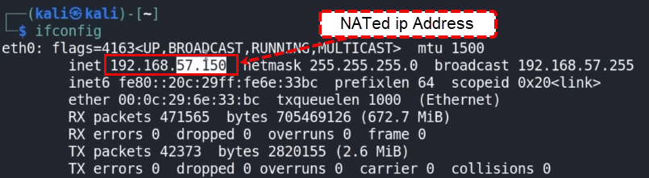

i want a ping a device, if this deveice is alive, go on and show me the result. this is going to sweep th entire network!
1. identify a device that is alive, so it can be tested.
as my network is on a NATed network, i'm running under a different IP Address subnet as the one showed when i type ip -a

2. My actual IP Address is on a .4.X (192.168.4.X). for this example i am going to ping 192.168.4.29
ping 192.168.4.29

if you are unsure of an IP address in your house that is active or your subnet in your house, you can simply run:
ping 192.168.57.1
or what ever your IP address is on the 3 rd octet. that would also work.
you might not get a lot of returned results, bu you'all get 1 or 2, when we do the sweep. but i advise you to figure
out what your IP is.
3. Lets try to ping a different IP that is not in our network with a count of 1. And try to send 1 package over and see, if it works.
As a result, we'll see, that it will not work!
ping 192.168.41.29 -C 1

4. A quick comparison

5 Ping my actual IP with a count of 1. And export the respons to a file named ip.txt
ping 192.168.4.29 -C 1 > ip.txt
cat ip.txt

6. let's start gathering data based up what we have in ip.txt
6.1. let's start by extracting the first line that is marked in the picture

cat ip.txt | grep "64 bytes"

We're building a ping sweeper to check all IP addresses in a specific subnet. For example, in the subnet 192.168.4.x,
we want to ping every address from 192.168.4.1 to 192.168.4.255 to see which ones are active. We'll send a single ping
to each address and look for a response like 64 bytes from 192.168.4.X. From the responses, we'll extract and list only
the IPs that are alive. Finally, I'll show you how to run this process in one go and retrieve the active IP addresses efficiently.
6.2 extract the IP address from the reponse
cat ip.txt | grep "64 bytes" | cut -d " " -f 4

Explanation: We're going to use the cut command to extract specific parts of a line of text. To do this, we need to define a delimiter, which is
what separates the parts of the line. In this case, we’ll use a space (-d " "). Then, we specify which part (or field) to extract using -f, and we'll choose
the 4th field (-f 4). This means cut will split the line at every space and grab the 4th part, which will be the IP address
6.3 clean the IP Address
cat ip.txt | grep "64 bytes" | cut -d " " -f 4 | tr -d ";"

Now we have the IP address, but there’s an issue: it has a colon (;) at the end (e.g., 192.168.4.29;). We want to remove that
and keep just the IP address (e.g., 192.168.4.29). To fix this, we’ll use the tr (translate) command with the -d option to delete
the ;. We add another pipe and run tr -d ";". After this, the IP address will be cleaned up, leaving just the part we need
6.4 how ca we apply this to something bigger? to a whole list.
6.4.1 create a bash file
mousepad ipsweep.sh

6.4.2 declare the file as a bash file
#!/bin/bash

6.4.3 create a loop to retrieve ips from 192.168.4.1 to 192.168.4.254
for ip in `seq 1 254`; do
ping -C $1.$ip | grep "64 bytes" | cut -d " " -f 4 | tr -d ";" &
done

6.4.4 run the bash file
chmod +x ipsweep.sh
./ipsweep.sh 192.168.4

6.4.5 make sue the script cannot be run without argument
if ["$1" == ""] # if no argument is entered
then
echo "You forgot an IP Address"
echo "Syntax: ./ipsweep.sh 192.168.4"
else
for ip in `seq 1 254`; do
ping -C $1.$ip | grep "64 bytes" | cut -d " " -f 4 | tr -d ";" &
done
fi

test the srcipt without and with argument
./ipsweep.sh
./ipsweep.sh 192.168.4

6.4.6 Store the results in a text file
./ipsweep.sh 192.168.4 > ips.txt

6.5 now wwe have a list of ip addresses, now we want to do port scanning( nmap)
6.5.1 example:
nmap -T4 - A -p-

6.5.2 we can run nman für every ip address in a specific network 192.168.4.0/24. but that will time in looking and finding
which IP addresses are valid.
nmap 192.168.4.0/24
6.5.3 But as we have a list of valid ips we can stream up the process
for ip in $(cat ips.txt); do nmap $ip & done